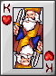
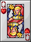
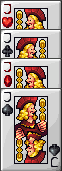

The Deck of the Four Kingdoms is rife with conflict. You must crown your king, hone your steel, and command your people. Do you have the strategic mind to defeat your rival kings? Or, will your name fade with time? It's time to breathe life into that dusty old deck of cards!
The goal of Kingdom Coinquest is to defeat your rival kingdoms. Players will draw until they have 3 cards in hand each turn. Choose strategically the source from where you draw your cards. You have 3 options, The Forge (deck), The Graveyard (community discard) or your Salvage Yard (your set of 3 personal discard slots). The cards in hand could be Equipment Cards, Queen Cards, Jack Cards or Ace Cards. Each card type is outlined in its own section. You can only play a card of your Suit of Arms unless you have 2 cards of a Rival Kingdom in your hand. 2 cards of a Rival Kingdom can be played as 1 card of your own Suit. This is known as Recruiting. After you make your play, you must discard a card from your hand. This discard can be placed in 1 of 2 places. If you discard to the Graveyard, other players will have a chance at accessing the card in the future. If you discard to 1 of the 3 personal Salvage Yard slots, only you can access these cards in the future. However, space is limited in the Salvage Yard. Only 3 cards total can be stored here.
Victory is accomplished by playing Equipment Cards on your Quartermaster to be prepared for use by your Knight and Peasant. Once prepared, an Equipment card can then be equipped to either your Knight or your Peasant, during your Play Phase. Use your Peasants to attack a rival kingdom. Use your Knight to defend your King. Once a King has depleted his 20 health points, he is no longer in play. Be the last King standing and you are victorious!
This setup will be duplicated by each player. (Note: Forge and Graveyard are community piles!)
Note: At this point, each player should have (1) King in front of them and there is only one deck of cards face down, in the location labeled "forge" on the set-up figure.
It is important to take your turn in the following order:
The Forge is your primary source for stocking your hand each turn. The Forge deck is 1 of the 3 places you can draw from during the Draw Phase of your turn.
The Graveyard is a community shared discard pile. The Graveyard serves a dual purpose. It is also 1 of 3 places you can choose to draw from during the Draw Phase of your turn. The Graveyard is always stacked face up, and only the top card is accessible at any time.
Be careful! Anything you discard to the Graveyard is then retrievable during the Draw Phase of a rival kingdom's turn!
There are 3 spots in your area of the play field labeled "Salvage". These are additional discard slots which can hold 1 card each. These cards can be retrieved just like drawing from the Forge or the Graveyard. However, your Salvage Cards are only accessible to you.
Note: Only 1 card per Salvage spot. 3 total salvage cards per player at any time.
The preparer and provider of weapons and armor for your Knight and Peasant. One card may be played here at a time. An Equipment card played here enters preparation. The only time an Equipment card will not need to be prepared by your Quartermaster is when you play an Ace Card. An Ace can Resurrect the top card of the Graveyard directly onto the Knight or Peasant. Depending on the value of the Equipment Card, the preparation cost varies. The cost of preparation is paid in turns.
Note: The only way to remove an Equipment Card in process is to either wait until it's done being prepared or discard it directly to the Graveyard on your Discard Phase.
Tip: Place the Equipment Card being prepared by your Quartermaster sideways as shown in the diagram. Then immediately place enough counters on top of the card to represent how many turns of preparation are remaining.
Tip: Removing 1 counter from your Quartermaster should be the first thing you do each turn.
Note: This is not a Discard Move.
Note: Equipping counts as a play move, as does Attacking. Therefore, you may not Equip and Attack on the same turn!

The leader of your Kingdom. He must be protected at all costs.
The King starts with 20 health
points. A king is defeated when he has 0 or less health. The final King standing is the victor.
Non-Player Kings:

The King's right hand. She has vowed to protect her people and their way
of life.
The Queen will fully absorb 1 incoming attack, in all cases where a Knight is not available to defend the King.
The
Queen stays in play until defeated. A defeated Queen is then discarded
to the bottom of the Graveyard.
Note: Only 1 Queen can be active per player at a
time.

The Jack of all trades has no particular allegiance. Jacks are a wild card that can be used to recruit
any equipment card to your
allegiance. A card that was Recruited by using a Jack still needs to be
prepared
by the Quartermaster.
Note: Only 1 Jack can be in play per player at any time.
Note: A Jack can only be used on Equipment Cards.
(He may not be used to Recruit a Queen or an Ace. These
cards
may be Recruited, but not with a Jack.)
These cards represent weapons and armor. The Quartermaster prepares these
resources for use by your Peasant or Knight. The
value of the card influences its effect and preparation cost. Equip an Equipment Card to your Peasant to allow him to attack on a future play move. The Peasant can attack for the value indicated on the Equipment Card. Likewise, equip
your Equipment Card to a Knight, to add that card's value in defense to your Knight. Use the Knight to defend your King. More information can be found in the section on Attacking
Note: To unequip an Equipment Card, simply replace it with a different prepared Equipment Card.
The
equipment being replaced is then placed on the top of the Graveyard. This
does not count as your Discard Phase.
A pair of cards not of your kingdom's suit of arms. They count as individual cards until played together. Playing the 2 cards together is known as recruiting. A recruited card can be played as a card of your suit. Any card may become a recruited card when paired with another card of its same type regardless of suit. However, a Jack (wild card) may only be used for Recruiting Equipment (number-valued cards). A Jack cannot be used in Recruiting a Queen or Ace.
Card artwork does not belong to me. It was added for visual flair for a school project. This project was and is for educational purposes. I made this game as part of my Game Design class. All copyright artwork belongs to the copyright holders. I have not, do not, and will not make money off of this game, this repo, my portfolio site, or my YouTube.>